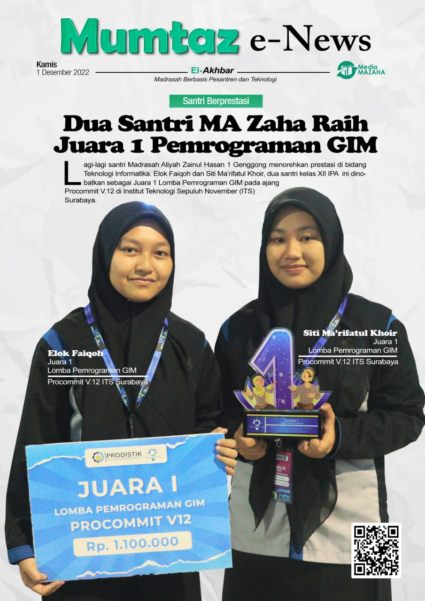
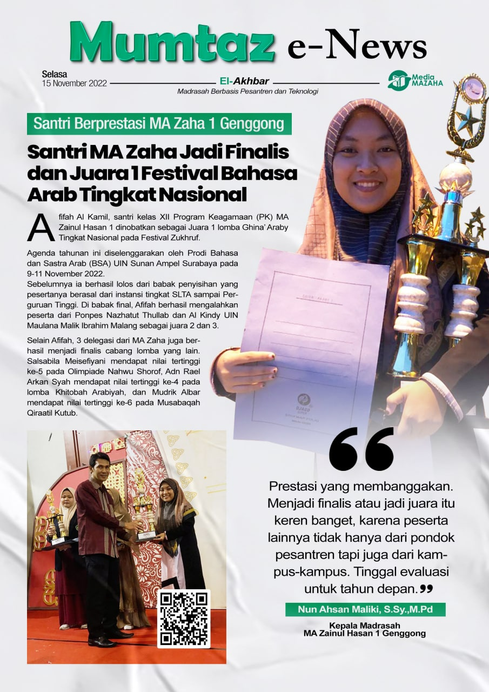
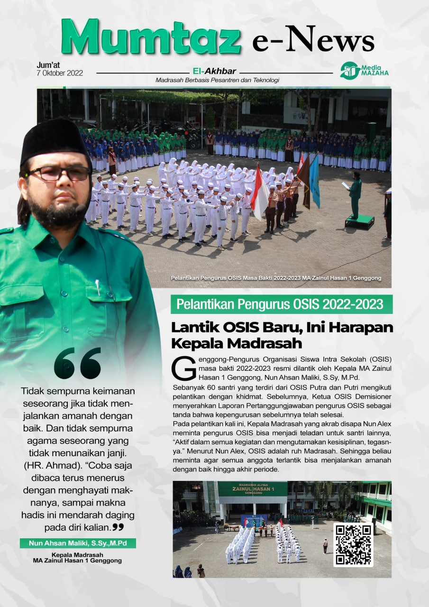
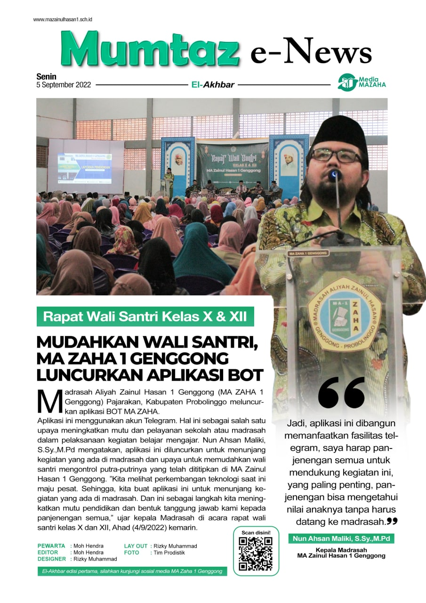
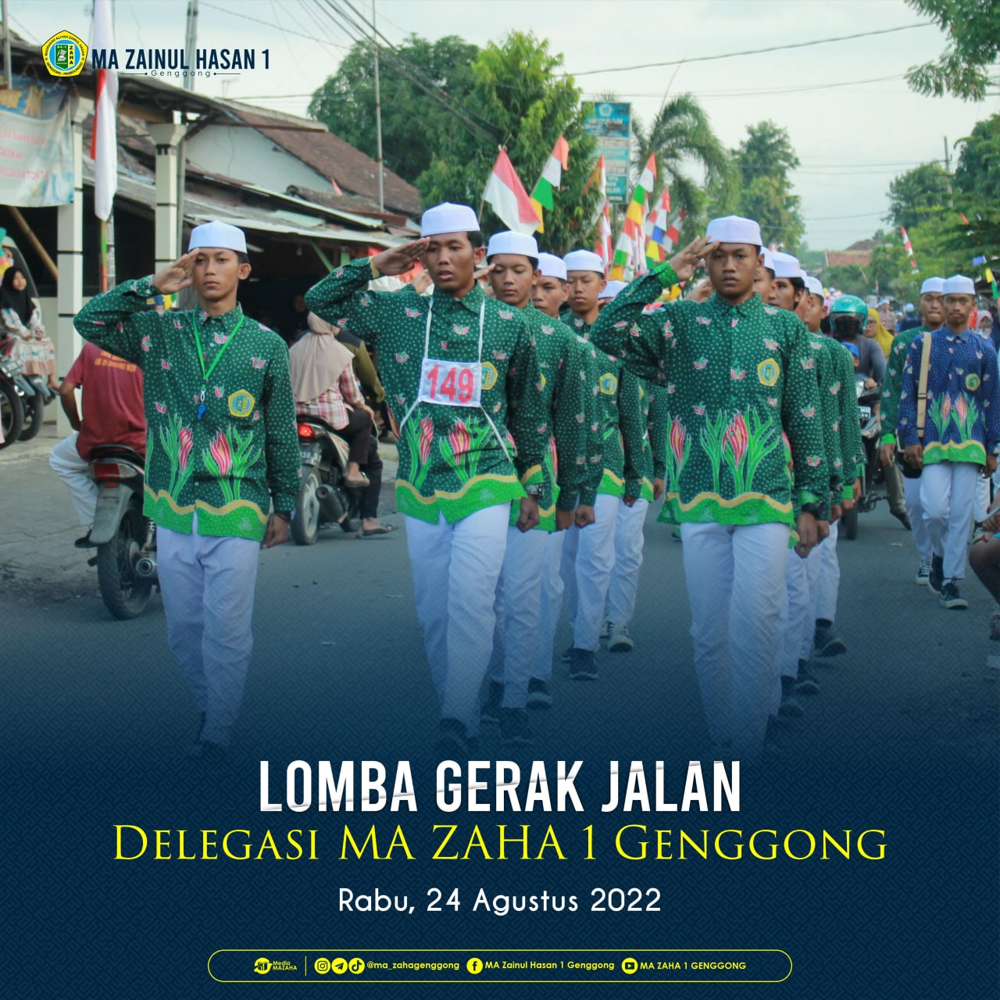

Berita Terkini
Dua Santri MA Zaha Raih Juara 1 Pemrograman GIM
Lagi-lagi santri Madrasah Aliyah Zainul Hasan 1 Genggong menorehkan prestasi di bidang Teknologi Informatika. Elok Faiqoh dan Siti Ma’rifatul Khoir, dua santri kelas XII IPA ini dinobatkan sebagai Juara 1 Lomba Pemrograman GIM pada ajang Procommit V.12 di Institut Teknologi Sepuluh November (ITS) Surabaya, Sabtu (26/11/2022).
Procommit adalah singkatan dari Prodistik Competition in IT, yang merupakan agenda tahunan Prodistik ITS Surabaya. Pesertanya berasal dari SMA/MA mitra ITS yang tersebar di Jawa Timur dan Jawa Tengah.
Santri MA Zaha Jadi Finalis dan Juara 1 Festival Bahasa Arab Tingkat Nasional
Afifah Al Kamil, santri kelas XII Program Keagamaan (PK) MA Zainul Hasan 1 dinobatkan sebagai Juara 1 lomba Ghina’ Araby Tingkat Nasional pada Festival Zukhruf. Agenda tahunan ini diselenggarakan oleh Prodi Bahasa dan Sastra Arab (BSA) UIN Sunan Ampel Surabaya pada 9-11 November 2022.
Sebelumnya ia berhasil lolos dari babak penyisihan yang pesertanya berasal dari instansi tingkat SLTA sampai Perguruan Tinggi. Di babak final, Afifah berhasil mengalahkan peserta dari Ponpes Nazhatut Thullab dan Al Kindy UIN Maulana Malik Ibrahim Malang sebagai juara 2 dan 3.
Lantik OSIS Baru, Ini Harapan Kepala Madrasah
Genggong-Pengurus Organisasi Siswa Intra Sekolah (OSIS) masa bakti 2022-2023 resmi dilantik oleh Kepala MA Zainul Hasan 1 Genggong, Nun Ahsan Maliki, S.Sy, M.Pd. pada Rabu, 5/10/2022. Pelantikan yang dilaksanakan di Halaman P5 itu bertema ‘Menjadi Pemimpin Berkualitas, Bersinergi untuk Madradah Mumtaz’.
Sebanyak 60 santri yang terdiri dari OSIS Putra dan Putri mengikuti pelantikan dengan khidmat. Sebelumnya, Ketua OSIS Demisioner menyerahkan Laporan Pertanggungjawaban pengurus OSIS sebagai tanda bahwa kepengurusan sebelumnya telah selesai...
Pemilihan Ketua OSIS, MA ZAHA 1 Gunakan E-voting

GENGGONG: Pemilihan Ketua OSIS putra masa khidmat 2022/2023 di MA Zainul Hasan 1 Genggong, Kecamatan Pajarakan Kabupaten Probolinggo, menerapkan pemungutan suara secara elektronik atau e-voting dengan aplikasi Robot Telegram SiMumtaz MA ZAHA, Kamis (8/9/2022) tadi.
Lukman salah satu panitia mengatakan pemilihan Ketua OSIS dengan sistem e-voting sangat memudahkan para pemilih dalam menentukan pilihannya. Karena pemilih hanya menunjukkan data nama dan kelas yang kemudian diverifikasi oleh petugas, setelah itu pemilih mendapat username dan pasword yang berfungsi mengaktifkan layar pemungutan suara.
Mudahkan Wali Santri, MA Zaha 1 Genggong Luncurkan Aplikasi BOT
GENGGONG: Madrasah Aliyah Zainul Hasan 1 Genggong (MA ZAHA 1 Genggong) Pajarakan, Kabupaten Probolinggo meluncurkan aplikasi BOT MA ZAHA. Aplikasi ini menggunakan akun Telegram. Hal ini sebagai salah satu upaya meningkatkan mutu dan pelayanan sekolah atau madrasah dalam pelaksanaan kegiatan belajar mengajar.
Nun Hassan Ahsan Malik mengatakan, aplikasi ini diluncurkan untuk menunjang kegiatan yang ada di madrasah dan upaya untuk memudahkan wali santri mengontrol putra-putrinya yang telah dititipkan di MA Zainul Hasan 1 Genggong. ”Kita melihat perkembangan teknologi saat ini maju pesat...
MA Zaha 1 Genggong Raih Juara 2 Lomba Gerak Jalan
PAJARAKAN: Sejumlah kegiatan dan lomba terus diadakan di bulan Agustus dalam rangka memperingati Hari Kemerdekaan Republik Indonesia yang ke 77, termasuk lomba gerak jalan yang digelar oleh Kecamatan Pajarakan Kabupaten Probolinggo Rabu, (24/08/2022) lalu, ajang ini dinilai bisa menumbuhkan rasa nasionalisme dan cinta tanah air.
Pembina Gerak Jalan MA Zainul Hasan 1 Genggong Ustaz Bambang Dwi mengatakan, lomba Gerak Jalan digelar dengan mengambil titik start Lapangan Desa Selogudig, Kecamatan Pajaraan dengan garis finish Lapangan PG (Pabrik Gula) Pajarakan. Di rute sepanjang sekitar 5 kilometer itu, timnya berusaha menampilkan yang terbaik.